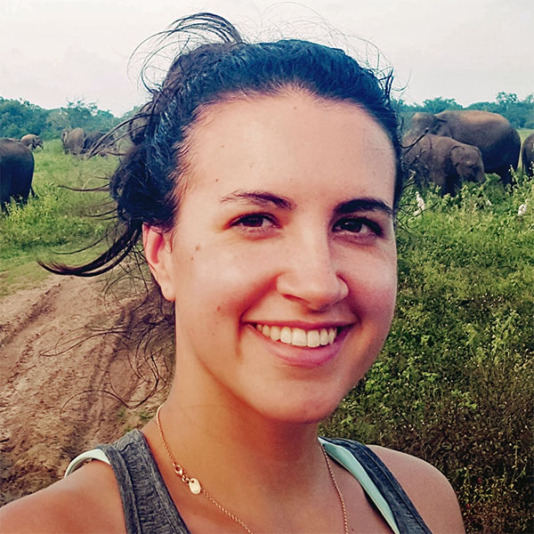

Pamela Hathway

- Lab member: 2016-2020
-
PhD thesis
Biologically-inspired machine learning approaches to large-scale neural data analysis
Pamela Hathway was a PhD student working on the problem of large scale neural data analysis, primarily on Neuropixels data. She developed a new technique called "neural topic modelling", adapting topic modelling methods from machine learning originally designed for finding topics in sets of text documents automatically.
Publications
Note that only publications as part of the Neural Reckoning group are included here (see external publications below for full list).
2020
-
Hathway P (2020)
Biologically-inspired machine learning approaches to large-scale neural data analysis.
PhD thesis, Imperial College London
2019
2018
External publications
This is a short preview of the publications from other sources (ORCID, Semantic Scholar). Note that publications from work done outside the Neural Reckoning group are included in this list.
2022
2020
2019
- M. Rogdaki, et al. (2019)
Glutamatergic function in a genetic high-risk group for psychosis: A proton magnetic resonance spectroscopy study in individuals with 22q11.2 deletion
European Neuropsychopharmacology - P. Hathway, Dan F. M. Goodman (2019)
Neural Topic Modelling
2019 Conference on Cognitive Computational Neuroscience
2018
- S. Jauhar, et al. (2018)
Determinants of treatment response in first-episode psychosis: an 18F-DOPA PET study
Molecular Psychiatry
2016
- S. Jauhar, et al. (2016)
P.3.f.031 Determinants of treatment response in first episode psychosis: a prospective 18F-DOPA PET study
European Neuropsychopharmacology
2015
- F. Hell, et al. (2015)
P182. Patterns of gait-related electrophysiological activity in the human subthalamic nucleus of patients with Parkinson’s disease
Clinical Neurophysiology